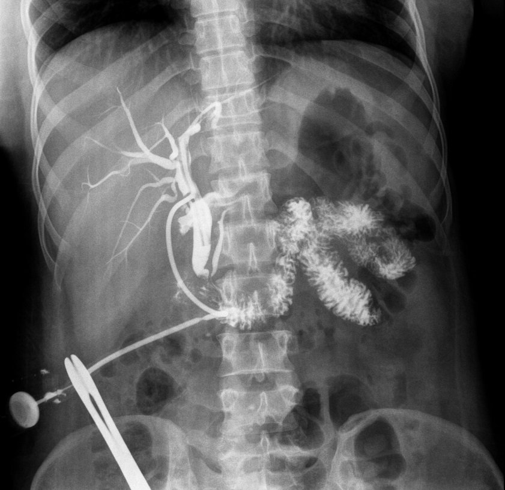
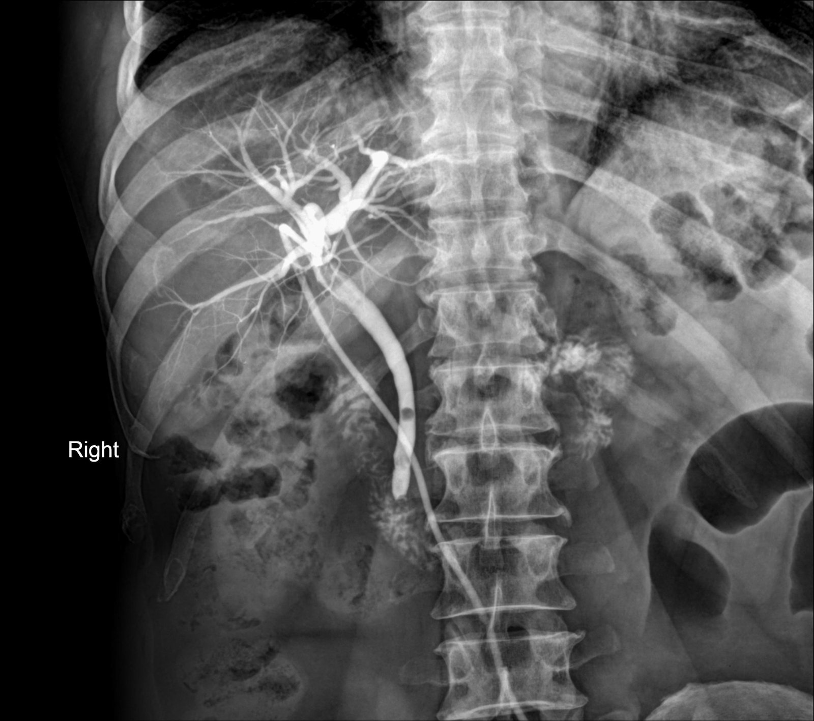

حقن مادة ظليلة عبر أنبوب T المتروك في القناة الصفراوية المشتركة (CBD) بعد العملية لتصوير القنوات الصفراوية.
🎯 Purpose الغرض
التأكد من خلوّ القنوات الصفراوية من حصى متبقية (retained stones)، ومن مرور المادة الظليلة بحرية إلى الاثني عشر، وعدم وجود تسرّب صفراوي (bile leak) قبل رفع الأنبوب.
💉 Contrast الصبغة وطريقة إعطائها
مادة ظليلة يودية ذائبة بالماء (water-soluble iodinated، غالباً non-ionic) مخففة، تُحقن ببطء عبر أنبوب T بعد إخراج كل فقاعات الهواء من المحقنة والأنبوب.
📋 Patient preparation تحضير المريض
يُجرى عادةً بعد 7–10 أيام من العملية وقبل رفع الأنبوب
السؤال عن حساسية المادة الظليلة
لا يحتاج صياماً في الغالب
تعقيم نهاية الأنبوب وإخراج الهواء تماماً لأن الفقاعة تشبه الحصاة
صورة أولية (control film) قبل الحقن
📸 Views / Positions الإسقاطات والوضعيات
Control AP supine — صورة أولية قبل الحقن
AP supine خلال الحقن بدفعات صغيرة (fluoroscopy spot films)
RPO / LPO obliques — لفصل القناة عن العمود الفقري
صورة متأخرة (delayed/drainage) لإثبات التصريف إلى الاثني عشر
🚫 Contraindications موانع الفحص
التهاب القنوات الصفراوية الحاد (acute cholangitis)
حساسية شديدة سابقة للمادة الظليلة (نسبي)
⚠️ Complications المضاعفات
تسمّم دموي أو التهاب صفراوي (sepsis / cholangitis) بسبب ضغط الحقن
ألم أعلى البطن
خروج الأنبوب من مكانه
تفاعل مع المادة الظليلة (نادر)
🖼️ Images · الصور

Case courtesy of Hidayatullah Hamidi, Radiopaedia.org, rID: 50937 · CC BY-NC-SA 3.0
Normal T-tube cholangiogramتصوير أنبوب T طبيعي🟢 Normal

Case courtesy of Mohammad T. Niknejad, Radiopaedia.org, rID: 96610 · CC BY-NC-SA 3.0
Retained CBD stones (choledocholithiasis)حصى متبقية في القناة الصفراوية المشتركة🔴 Pathology · مرضي
🩺 الأعراض Symptoms
Follow-up after surgeryمتابعة بعد العملية
Yellow skin or eyes (jaundice)اصفرار الجلد والعينين (يرقان)
Pain in the right upper abdomenألم أعلى البطن الأيمن
⚠️ Red flags · متى تكون طارئة؟
حمّى ويرقان: التهاب القنوات (طارئ).
🩻 ليش نصوّر؟ الصبغة عبر أنبوب T تُظهر الحصى المتبقية كفراغات.